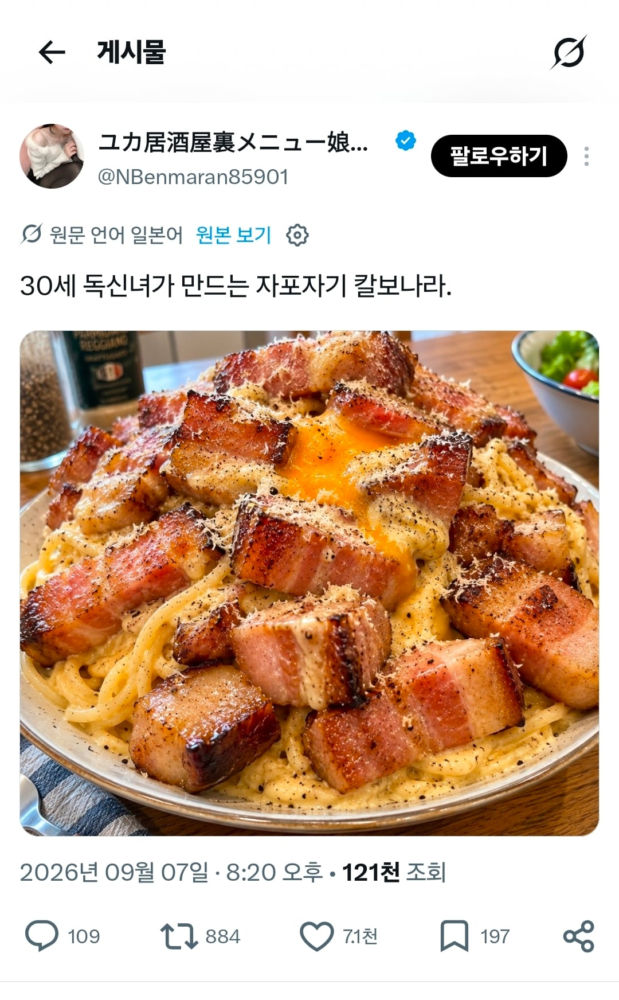
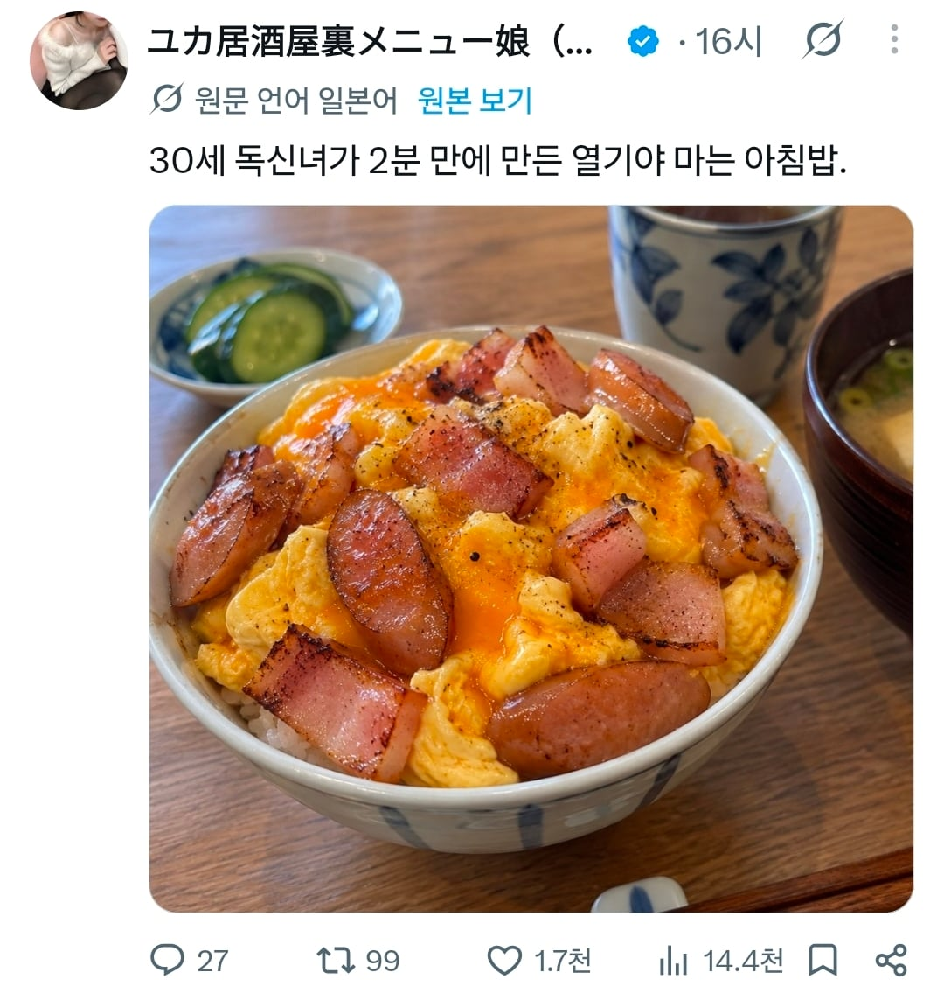
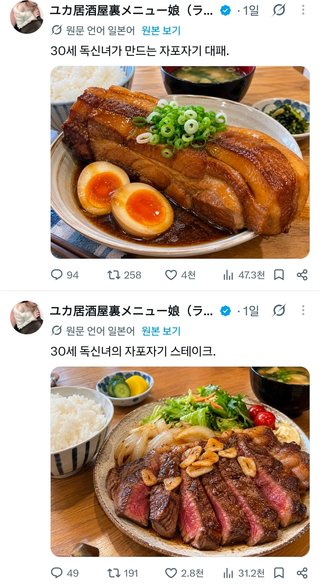
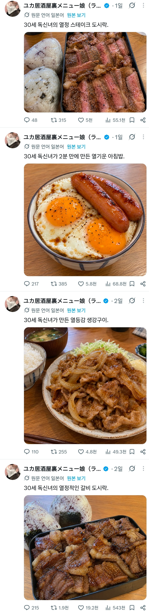

개드립에 한번 올라온것도 보인다
이야 ㄷㄷㄷ
미식계정이라는거 보니 원래부터도 맛잘알이시다




개드립에 한번 올라온것도 보인다
이야 ㄷㄷㄷ
미식계정이라는거 보니 원래부터도 맛잘알이시다
ai같다 ㄹㅇㅋㅋㅋㅋ
본인 사진이라면 쇄골미인인데?
나한테시집와라 이계집년아
발정 어디갔어
요리 존나 잘하네 굽기봐라
만화에서 꺼낸것 같은 비주얼이네
스테끼 잘 굽는 거 부럽다
어이 마누라
맛은 존나있겠다 ㅎㅎ
하씨 뭐만 하면 AI거리는거 존나 싫어하는데
이 사진은 진짜 AI 같네
ㅇㅈ
고가굽는게 예술이구나
그냥 저렇게 먹고 과자 음료수 안먹으면 살 안찜
디씨 그 췌장염으로 사망했다는 사람 생각나는 식단이네
계란 위 후추랑 소시지 질감, 뒤에 파, 양배추 보면 AI같음.
특히 갈비도시락, 계란+소시지는 AI 특유의 자글자글 얼룩덜룩한 텍스쳐가 느껴짐...
준비시간만 따지면 전력으로 사시는거같은데
결혼 자포자기인듯
AI 같은게 아니라 AI맞는거 아님? 자글자글한 지피티 특이 보이는디
사진이 ai같네
30세 독신녀의 체중이 보인다
그 폭식 머시기 만화 생각나네
gpt이미지느낌
폭식 너무 좋아! 모치즈키양
일본은 고기가 쌈??
ai 같은데
아니면 ai 보정이라도 들어갔던가
밥알같은거 보니 다 AI인듯. 첫짤부터 약간 혐오감을 주는 규칙성 노이즈가 느껴지는데
미식인데?
생명보험5개남편도시락
Ai인걸러 암 왜인지 몰라도 일본에는 저렇게 AI로 음식사진을 만들어 올리는게 유행이라고..
Ai
저 소시지 + 계후 하는데만 2분 더 걸리겠다
후추 뿌리는데 저렇게 등간격으로 붙는거 봤냐
당연히 AI지
AI맞음 최신버전은 아니네
자세히보니 ai 맞는거같다
까르보나라는 저정도로 두꺼운 베이컨으로 해먹어보고 싶긴 하네 ㅋㅋ
아직 ai 구분 되긴 하네 후추 오와열 기가막힌거 봐라 ㅋㅋ
첫짤 까르보나라 치즈 삐죽삐죽하네
자포자기해서 나한테 시집올 생각없나?
자포자기가 아니고 벌크업 식단이잖아
폭식이 좋아 무슨 무슨 양 이냐? ... ㅋㅋㅋ
이제 진짜 모르겠다
비주얼이 무슨 ai로 생성한것 마냥 폭력적이네 ㄷㄷ